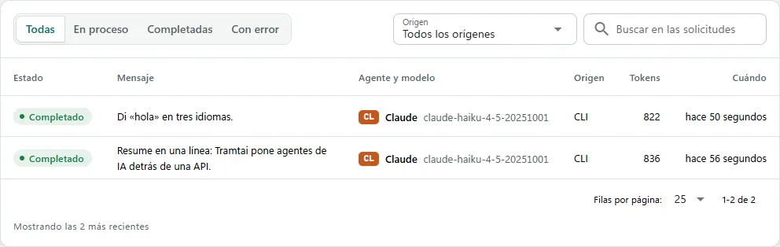
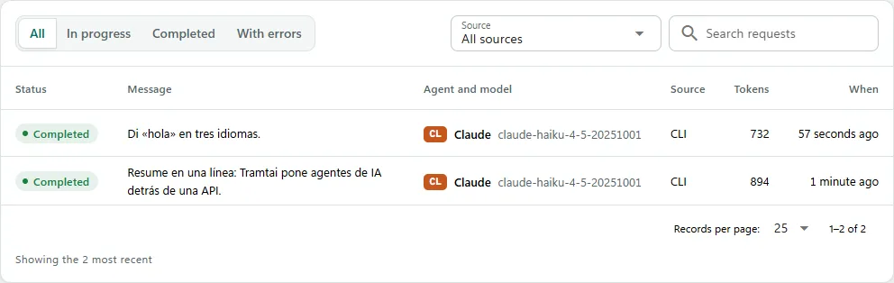
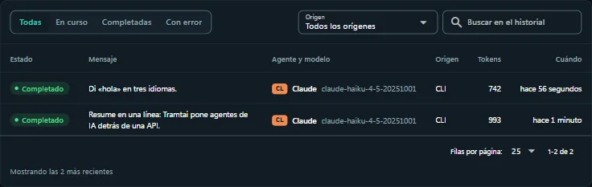
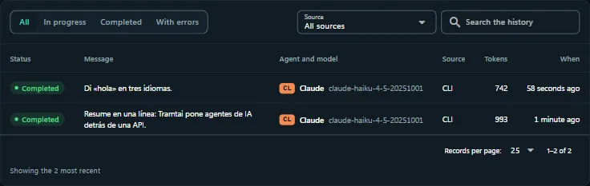

HistorialHistory
Cada petición queda en el Historial con su respuesta, el agente que respondió y el registro de cada paso.Every request stays in History with its answer, the agent that answered and the log of each step.
- Filtra por estado, origen o grupo, o busca por texto.Filter by status, origin or group, or search by text.
- Abre una petición para ver la respuesta y su «Registro», con cada paso y su hora.Open a request to see the answer and its "Log", with every step and its time.
- Si falló, corrige la causa y pulsa «Reintentar».If it failed, fix the cause and click "Retry".




¿Qué significan Completadas, En proceso y Con error?What do Completed, In progress and With errors mean?
Completadas recibieron respuesta; En proceso esperan o se están ejecutando; Con error fallaron o se interrumpieron.Completed got an answer; In progress are waiting or running; With errors failed or were interrupted.
¿Cómo veo cuánto tardó cada paso?How do I see how long each step took?
En «Registro», bajo la respuesta o en el detalle: cada paso con su hora y, arriba, cuánto duró cada etapa.In "Log", under the answer or in the detail: every step with its time and, at the top, how long each stage took.
¿Cómo veo lo que procesa mientras desarrollo?How do I watch what it processes while developing?
«tramtai servicio registro -f» muestra en vivo una línea por petición: agente, modelo, duración, tokens y la API de origen."tramtai servicio registro -f" shows one live line per request: agent, model, duration, tokens and the API it came from.
¿Puedo ver el servicio en primer plano?Can I run the service in the foreground?
Sí: detén el servicio y ejecuta «tramtai servicio iniciar --abrir»: corre con el registro a la vista, abre la app y Ctrl+C lo detiene.Yes: stop the service and run "tramtai servicio iniciar --abrir": it runs with the log in view, opens the app and Ctrl+C stops it.
¿Cómo borro los datos de prueba?How do I delete test data?
En Ajustes, «Borrar datos» elimina el historial y las APIs por aplicación. También puedes vaciar el Historial.In Settings, "Delete data" removes the history and the per-app APIs. You can also empty History.